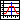

On peut supprimer des points localement à la fenêtre statistique en sélectionnant ceux-ci par glisser déplacer puis en appuyant sur Suppr ou en sélectionnant supprimer dans le menu local (clic droit). On peut aussi utiliser la gomme (sélection d'un rectangle contenant ceux-ci par glisser déplacer).
Le menu local (clic droit) et les boutons permettent :
 (menu caractéristiques) : affiche un tableau récapitulatif des différentes caractéristiques de la distribution. En particulier CV est le Coefficient de Variation : écart type divisé par la moyenne arithmétique exprimé en pour cent. C'est donc une dispersion relative. IC est l'abréviation de Intervalle de Confiance. ICm est l'intervalle de confiance sur la moyenne.
(menu caractéristiques) : affiche un tableau récapitulatif des différentes caractéristiques de la distribution. En particulier CV est le Coefficient de Variation : écart type divisé par la moyenne arithmétique exprimé en pour cent. C'est donc une dispersion relative. IC est l'abréviation de Intervalle de Confiance. ICm est l'intervalle de confiance sur la moyenne.

Options statistique : choix de la grandeur d'étude et des paramètres de représentation. On peut choisir d'afficher ou non :On peut choisir les classes :
copie le graphe dans le presse-papiers pour récupération dans un traitement de texte.
 copie le tableau dans le presse-papiers pour récupération dans un traitement de texte.
copie le tableau dans le presse-papiers pour récupération dans un traitement de texte.
imprime le graphe et les tableaux.
permet de supprimer des points (sélection d'un rectangle contenant ceux-ci par glisser déplacer). Cette suppression ne joue que localement et n'a pas d'effet sur les données. Pour maintenir cette indépendance, il n'y a pas de mise à jour systématique de la fenêtre statistique lors d'une modification des données, sauf lors d'un ajout de données. Si vous voulez forcer une mise à jour, sélectionner la boite de dialogue options puis cliquer sur OK.
Cible : elle représente la valeur que devrait avoir la moyenne (notion utilisée par les biologistes). L'inexactitude absolue est l'écart Moyenne-Cible ; l'inexactitude relative la valeur absolue de cet écart divisée par la valeur de la cible.
Créé avec HelpNDoc Personal Edition: Générer des livres électroniques EPub facilement